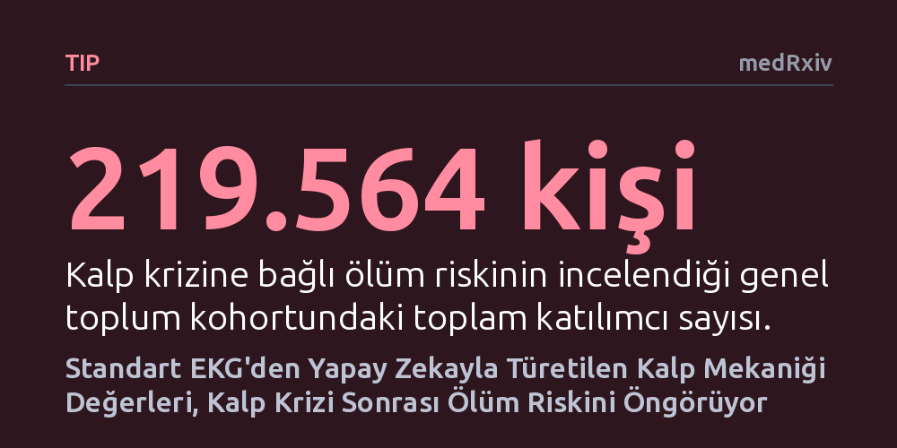

TIP · medRxiv · 2026-10-26
Araştırmacılar, standart 12 derivasyonlu EKG sinyallerinden yapay zekayla türetilen kalp mekaniği verilerinin kalp krizi sonrası ve genel toplumdaki ölüm riskini öngörüp öngöremeyeceğini inceledi. Sonuçlar, bu sentetik ölçümlerin mevcut klinik risk skorları ve ekokardiyografiden bağımsız olarak ölüm riskini güçlü biçimde tahmin edebildiğini gösterdi.
Pahalı ve uzmanlık gerektiren ekokardiyografi cihazlarına gerek kalmadan, yalnızca yaygın ve ucuz standart bir EKG çekimiyle hastaların hayati kalp riski çok daha hızlı ve hassas biçimde belirlenebilir.

Bir kalp krizi sonrasında hastanın yaşam beklentisini belirleyen en kritik unsurlardan biri, kalbin sol karıncığının fiziksel kasılma ve gevşeme kapasitesidir. Sol karıncık vücuda oksijenli kanı pompalayan ana merkezdir; bu dokudaki mekanik hasarın derecesi, gelecekteki ölüm veya kalp yetmezliği riskini doğrudan etkiler. Günümüzde bu mekanik işlevi değerlendirmek için doku Doppler ekokardiyografisi gibi gelişmiş kalp ultrasonu yöntemleri kullanılır. Ancak bu cihazlar hem her klinikte bulunmaz hem de uygulanması ve yorumlanması uzman kardiyolog deneyimi gerektirir.
Buna karşılık elektrokardiyogram (EKG), neredeyse tüm acil servislerde ve birinci basamak sağlık merkezlerinde birkaç dakika içinde çekilebilen, ucuz ve son derece yaygın bir testtir. Ne var ki geleneksel EKG yalnızca kalbin elektriksel iletisini kaydeder; kalbin odacıklarının ne kadar esnek gevşediğini veya ne güçle kasıldığını doğrudan göstermez. Araştırmacıların peşine düştüğü temel soru şuydu: Yalnızca standart bir EKG'deki dalga biçimlerinden yola çıkarak, kalbin o anki fiziksel hareket mekaniğini yapay zekayla gerçeğe yakın biçimde tahmin etmek ve bu tahminle hastanın ölüm riskini hesaplamak mümkün müdür?
Araştırma ekibi, iki rakip sinir ağının bir arada çalıştığı çekişmeli üretici ağ (GAN) mimarisine dayanan gelişmiş bir yapay zeka modeli kullandı. Daha önceki çalışmalarda doğrulanmış olan bu model, 12 derivasyonlu standart EKG sinyallerini girdi olarak alıp mitral kapak halkasının kasılma hızını (s'), erken gevşeme hızını (e') ve düzlemsel hareket mesafesini (MAPSE) sentetik olarak üretiyor. Önemli bir metodolojik ayrıntı olarak yapay zeka, bu çalışma kapsamında yeniden eğitilmedi ve hasta sonuçlarından tamamen habersiz şekilde körleme yöntemiyle uygulandı.
Elde edilen sentetik mekanik parametrelerin geçerliliği iki ayrı grupta test edildi. Birinci grup, kalp krizi geçirmiş 1.065 hastadan oluşuyordu ve bu hastalar ortalama 1,44 yıl boyunca izlendi. İkinci grup ise 219.564 kişilik devasa bir genel toplum kohortuydu ve katılımcılar medyan 3,42 yıl takip edildi. Araştırmacılar, yapay zekanın türettiği bu mekanik değerleri, klinik pratikte yaygın kullanılan GRACE risk skoru ve doğrudan ölçülen sol karıncık ejeksiyon fraksiyonu (LVEF) gibi altın standart göstergelerle kıyaslayarak ek bir katkı sağlayıp sağlamadığını inceledi.
Kalp krizi geçiren 1.065 kişilik kohortta takip süresi boyunca 109 ölüm meydana geldi. İncelenen üç sentetik mekanik parametre de tüm nedenlere bağlı ölümleri anlamlı biçimde öngördü. Ancak yaş, cinsiyet ve klinik değişkenler modele dahil edildiğinde, özellikle gevşeme hareketini temsil eden sentetik e' değeri bağımsız bir risk göstergesi olarak öne çıktı. Hastaneden taburcu edilen 1.017 kişilik hasta grubunda ise bu sentetik parametre, kardiyolojide standart kabul edilen GRACE risk skorunun tahmin doğruluğunu belirgin şekilde artırdı ve risk modellerindeki tahmin gücünün yüzde 28 ila 46'sını tek başına oluşturdu.
219 bini aşkın kişinin yer aldığı genel toplum kohortunda da benzer şekilde çarpıcı sonuçlar kaydedildi. Takip süresince gerçekleşen 817 ölüm vakası incelendiğinde; yaş, cinsiyet ve mevcut EKG anormallikleri hesaba katıldıktan sonra bile üç sentetik parametre kalp krizine bağlı ölümleri öngörmeyi sürdürdü. Özellikle kapak düzlemi hareketini ifade eden MAPSE değeri, ölüm riskini belirlemede en belirgin etkiyi (0,49 alt tehlike oranı ile) sergiledi. Bu bulgular, yapay zekanın sadece kriz anında değil, genel popülasyonda da gelecekteki ölümcül krizleri saptayabildiğini ortaya koydu.
Bu sonuçlar, uzman ve ultrason cihazı bulunmayan kırsal hastanelerde veya acil servislerde yalnızca bir EKG çekimiyle hastaların doku düzeyindeki kalp fonksiyonlarının matematiksel olarak yakalanabileceğini gösteriyor. Bir hekim, hastanın başında dakikalar içinde çekilen bir EKG sayesinde, ekokardiyografi sırası beklemeden yüksek riskli hastaları ayırt edebilir ve taburculuk sonrası yakın takip kararlarını daha isabetli verebilir.
Bununla birlikte çalışmanın sonuçlarına temkinli yaklaşmak gerekiyor. Veriler geriye dönük kohort analizlerine dayandığı için bulguların doğrudan hasta başında klinik kararları değiştirmeden önce ileriye dönük klinik deneylerle doğrulanması şart. Ayrıca bu yöntem kalbin fiziksel hareketini doğrudan kamerayla ya da ses dalgalarıyla görüntülemiyor; yalnızca elektriksel sinyallerden çıkarılan matematiksel bir kestirim sunuyor. Dolayısıyla bu araç, kapsamlı bir kardiyolojik ultrason muayenesinin yerini almaktan ziyade, acil risk taramalarında hekimlere erken bir uyarı katmanı sağlama potansiyeli taşıyor.